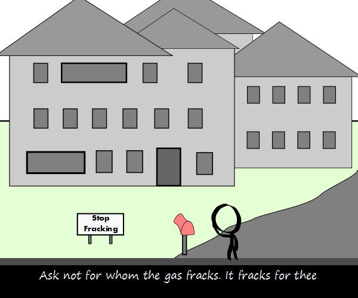

Comic JK 912
When I Feel Like It
⇤
<
?
>
⇥

⇤
<
?
>
⇥
Forum
.
RSS
.
Digg
.
Facebook
.
Reddit
.
Twitter
.
Stumbleupon
Enter your thoughts on number 912 here. Please, no spamming, trolling, or phraking >Fraking... like Jonathan Frakes? >>if it was, would that make it so... ? um... what exactly is "fracking"? >See comic 907. >also see wikipedia. > It's how polite Canadians say "fucking" (your anus, of course). >>No, that would be "fricking". Fracking is some process of extracting natural gas from rocks or something. >>> Wow, are you ever not funny. The room is awkwardly nodding at your complete misunderstanding of humor. >>>> Actually the room is mostly empty. >>And Battlestar Galactica fans >>>Are mostly nonexistant as well. Is that your anus's house?